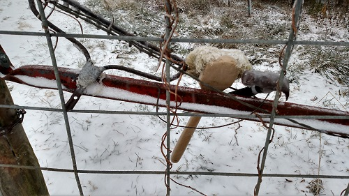

Tricks of the Trade: Miscellaneous Tips to Make Farm Life Easier
Talk to any farmer for long, and you'll start hearing clever ways they've solved some problem or other. One of Margaret's favorite things to do is just chat with long-time farmers to hear what they've thought up. Here we'll list little hacks we've heard or thought up ourselves.
Winter livestock water
At the moment, we don't have a tank de-icer in the water tank for the cows, so we have to break ice when it gets below freezing. At first we just used an old hammer to break the ice into chunks, then picked it up and tossed it out of the tank. But that leads to a lot of wet gloves and fingers. So Margaret stole borrowed an old rake head from work, which makes a wonderful ice-removing tool.

Hard-ground temporary fence post installation
Setting up temporary electric fence is not difficult, if you have the right tools. Certain conditions, particularly frozen or dry hard ground, makes it difficult to impossible to get temporary fenceposts into the ground. With simple fiberglass posts, 5/8-1/2" diameter, a handheld pounder usually does the trick: get some metal pipe, 1-2" diameter and about 6-10" long, threaded at one end. Screw on a cap, and tada - you've got a small pounder perfect for these posts. This is generally enough to get through hard ground. If your posts have insulators on the top, or you haven't got the materials for the pounder, bring a cordless drill with an appropriately-sized bit, to drill pilot holes in the ground. Another option, especially if you can get a UTV or 4-wheeler to the pasture, is to make weighted posts: fill a small bucket or flowerpot with concrete mix, and stab a metal bar or other fence post into the concrete. Once it hardens, you have a portable but sturdy fence post.
Moving stuff around
As a graduate student, Margaret was taking care of six pastures of calving cows. The cows were moving a lot, and their waterers and mineral feeders needed to be moved with them, and it wasn't possible to use a UTV to do it. A simple plastic kids' sled reduced friction just enough to make dragging the tanks a heck of a lot easier, and certainly wasn't hard to carry around.
Feed sacks for carrying everything
We've saved every feed sack we've opened. When we've needed to move gravel or soil around, filling the sacks and loading them in the back of our Gator is easier, faster, and lets us haul more stuff compared to filling the bed of the Gator and trying to dump it later. Flattened out, we also used the sacks to move sections of sod from an area we were clearing out (to pour a concrete driveway) to an area we wanted to replant it. We could stack multiple layers of sod in a garden cart, pull to the destination, and unload the sections in one piece.
Rewinding electric fence wire
Most grazing farmers invest in decent reels to make rolling, storing, moving, and unrolling polywire or light metal wire simple, fast, and frustration-free. We don't have any reels (yet), so a quick substitute is a cordless drill. Sink a drill bit a few inches into the cut end of a 12" long 2x4, tie the wire to the wood, and slowly activate the drill to roll the wire up.

ATV/UTV frame for crossing electric fence
Several farmers have modified vehicles to allow them to drive right over electric fence, by welding a frame with a point to the front of the vehicle and continuing the frame under the body.
This part of the site is far from over. There are probably lots of things we've forgotten to list already, and the more we learn, the more we'll share.